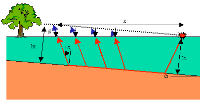
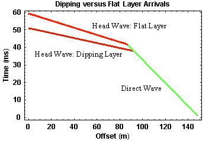

Head Waves From a Dipping Layer: Shooting Up Dip
Now what happens if we place the source down dip, to the right, and the receivers up dip? The geometry and the ray paths (red) for the head wave observed at four different offsets are shown in the figure below.
As we did when shooting down dip, we can examine how the dip affects the observed travel times by comparing them to the times we would observe along a line passing through the source and paralleling the boundary (dashed line). In this case, notice that when shooting up dip, the actual ray paths are smaller than we would observe along the black dashed line. Thus, the travel times at any offset for the head wave observed on the surface of the Earth are less than those we would observe for an equivalent flat layer. The time deficit increases with increasing offset and has the same size as the time increase at a given offset when shooting down dip. The travel-time curve we would observe over this structure is shown below.
As before, direct arrivals are shown in green. They are not affected by dip on the layer. The head wave generated from the dipping layer as observed on the surface of the Earth is shown in dark red. As it would be observed on the black dashed line is shown in bright red. As described above, the head wave observed on the Earth's surface arrives at earlier and earlier times with increasing offset. As before, the travel-time curves collected over a dipping layer when shooting up dip consist of the exact same components as those observed over a flat layer (two straight line segments).
If we were to interpret this data with having no other information, the following results would occur:
- We would not be able to tell the layer was dipping from the shape of the travel-time curve. In both the dipping and non-dipping layer cases, the curve consists of two linear segments. Thus, we would most like misinterpret the observations as being indicative of a simple flat-lying interface,
- We could compute the velocity of the layer from the slope of the travel-time curve that defines the direct arrival,
- When using the slope of the travel-time curve for the head wave, we would compute a velocity for the halfspace that is too large, and
- Using the velocity calculated above and the zero offset time, t0, we would compute a depth to the layer boundary smaller than the distance to the interface beneath the source, hr.
Seismology
- Simple Earth Model: Low-Velocity Layer Over a Halfspacepg 11
- Head Wavespg 12
- Records of Ground Motionpg 13
- Travel-time Curves for a Simple Earth Modelpg 14
- First Arrivalspg 15
- Determining Earth Structure from Travel Timespg 16
- Derivation of Travel Time Equationspg 17
- High-Velocity Layer Over a Halfspace: Reprisepg 18
- Picking Times of Arrivalspg 25
- Wave Propagation with Multiple Horizontal Layerspg 26
- Travel Time Curves from Multiple Horizontalpg 27
- Hidden Layerspg 28
- Head Waves from a Dipping Layer: Shooting Down Dippg 29
- Head Waves from a Dipping Layer: Shooting Up Dippg 30
- A Field Procedure for Recognizing Dipping Bedspg 31
- Estimating Dips and Depths from Travelpg 32